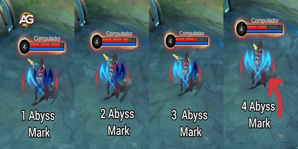
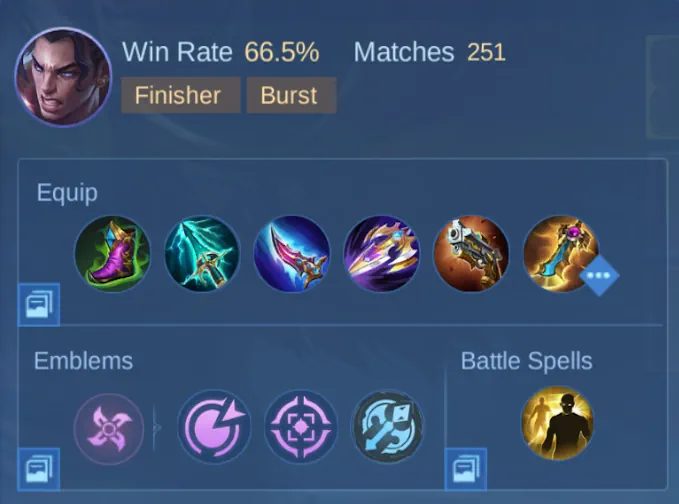

Entendendo as Forças e Fraquezas de Brody
Antes de mergulharmos nos detalhes, é importante entender o que torna Brody diferente de outros atiradores. Ao contrário dos atiradores tradicionais que dependem da velocidade de ataque, a força de Brody está no dano explosivo e na capacidade de atacar enquanto se move, causando uma enorme quantidade de dano físico. Seus ataques podem ser mais lentos em comparação com outros atiradores, mas são mais fortes e permitem movimentação durante a animação de ataque.
Principais Forças:
- Alto Dano Explosivo: Brody é excelente para eliminar inimigos rapidamente, especialmente alvos frágeis como magos ou outros atiradores.
- Mobilidade: Apesar de sua velocidade de ataque lenta, Brody pode se reposicionar durante os ataques, tornando-o altamente móvel em lutas de equipe.
- Controle de Grupo: Sua segunda habilidade atordoa os inimigos, o que pode ajudar a travar alvos prioritários.
Fraquezas:
- Baixa Velocidade de Ataque: Os ataques básicos de Brody têm uma longa animação de preparação, o que pode parecer lento em comparação com outros atiradores.
- Frágil: Como muitos atiradores, Brody tem baixa durabilidade, tornando-o vulnerável a assassinos e dano explosivo de magos.
- Dependente de Habilidades: O dano e a sobrevivência de Brody dependem fortemente do uso adequado de suas habilidades e posicionamento.
Detalhamento das Habilidades de Brody
Entender as habilidades de Brody é crucial para dominar seu estilo de jogo. Vamos dar uma olhada detalhada em cada uma de suas habilidades.
Passiva - Corrosão do Abismo
A passiva de Brody é uma das principais mecânicas que o diferencia de outros atiradores. Com cada ataque básico, Brody aplica uma marca do Abismo no inimigo, que pode ser acumulada até quatro vezes. Cada marca aumenta o dano causado ao alvo marcado em 5%, e Brody ganha 5% de velocidade de movimento adicional para cada marca. Essa mecânica o torna mais perigoso conforme continua a atingir o mesmo alvo.
Dicas Importantes para a Passiva:
- Concentre-se em acumular marcas do Abismo em alvos prioritários, especialmente em lutas prolongadas.
- Lembre-se de que cada marca dura 8 segundos, então você tem tempo para se reposicionar e atacar novamente.
- O bônus de velocidade de movimento permite que você se mova enquanto mantém um alto dano.

Primeira Habilidade - Impacto do Abismo
A primeira habilidade de Brody é uma onda de choque linear que causa dano físico a todos os inimigos em seu caminho e aplica uma marca do Abismo. O primeiro inimigo atingido receberá uma marca, o segundo duas marcas e assim por diante. A habilidade também reduz a velocidade dos inimigos em 30% por 1,2 segundos.
Dicas de Uso:
- Maximize esta habilidade após a sua ultimate, pois é a principal ferramenta de poke e limpeza de ondas de Brody.
- Use o Impacto do Abismo para marcar vários inimigos antes de usar a sua ultimate para maximizar o dano.
- O efeito de lentidão ajuda a perseguir inimigos ou fugir quando necessário.
Segunda Habilidade - Golpe Corrosivo
Essa habilidade permite que Brody avance em direção a um inimigo, causando dano físico e atordoando-o por 0,8 segundos. Ao atingir o alvo, Brody pode se reposicionar usando o controle de movimento. O Golpe Corrosivo também aplica uma marca do Abismo.
Dicas de Uso:
- Use essa habilidade para iniciar ou sair de lutas, mas tenha cuidado para não avançar demais.
- O atordoamento oferece excelente controle de grupo, sendo ideal para duelos 1v1 ou para finalizar inimigos com pouca vida.
- Evite usar essa habilidade de forma imprudente em lutas de equipe, pois mergulhar muito fundo pode deixá-lo exposto a controle de grupo e dano explosivo.
Ultimate - Memória Fragmentada
A ultimate de Brody atinge todos os inimigos em um raio de 8 jardas, causando dano físico baseado na saúde perdida dos inimigos e no número de marcas do Abismo que possuem. Cada marca é consumida ao usar a ultimate, amplificando o dano causado.
Dicas de Uso:
- Sempre aplique as marcas do Abismo antes de usar sua ultimate para maximizar o dano.
- Use Memória Fragmentada como um movimento de finalização, especialmente quando os inimigos estiverem com pouca vida.
- A habilidade não é um canal, o que significa que você pode se mover ou usar o Flicker durante a animação.
Configurações de Emblema, Feitiços de Batalha e Recomendações de Build
Para obter o máximo de Brody, você precisará da configuração correta de emblema, feitiços de batalha e itens. Essas escolhas são cruciais para melhorar o desempenho de Brody durante o jogo.
Configuração de Emblema
O Emblema de Assassino é a melhor escolha para Brody devido à amplificação de dano e penetração. Aqui está um caminho recomendado:
- Talento 1: Ruptura – Fornece perfuração adaptativa, o que complementa o dano de Brody.
- Talento 2: Mestre Assassino – Aumenta o dano de Brody quando houver apenas um inimigo, facilitando o abate de oponentes mais resistentes.
- Talento 3: Ignição Letal – Concede a Brody dano adicional a multiplos inimigos.
Feitiços de Batalha
- Flicker: O Flicker é essencial para Brody, pois oferece mobilidade tanto ofensiva quanto defensiva. Você pode usá-lo para escapar de situações perigosas ou perseguir inimigos em fuga.
- Aegis: Se você estiver enfrentando muito dano explosivo, considere usar o Aegis para ter proteção extra em lutas cruciais.
Melhor Build Global de Brody 2025
A build de Brody deve focar em aumentar o dano físico e fornecer alguma sobrevivência para resistir ao dano explosivo dos inimigos. Aqui está a build recomendada:
- Botas de Vigor: Fornecem resistência mágica e reduzem a duração de efeitos de controle, ajudando Brody a sobreviver contra magos e composições com muito controle.
- Perfurador Celestial: Este item aumenta significativamente o ataque físico de Brody e oferece ataque adaptativo e velocidade de movimento. Sua habilidade passiva executa inimigos quando são danificados por Brody; se a vida cair abaixo de 4%, eles serão executados.
- Lâmina dos Sete Mares: Adiciona ataque físico e penetração, enquanto sua passiva proporciona dano explosivo extra após sair de combate, sendo ideal para ataques surpresa.
- Alabarda dos Mares: Concede ataque físico e velocidade de ataque, mas sua principal força é a passiva que reduz os efeitos de cura em inimigos atingidos, sendo útil contra equipes com alta sustentação.
- Rugido Maléfico: Oferece penetração física, ajudando Brody a destruir tanques e lutadores com alta defesa. É um item crucial para lidar com os adversários na linha de frente.
- Meteoro Rosa de Ouro: Uma combinação perfeita de ataque e defesa, este item oferece roubo de vida e ataque físico, além de fornecer um escudo quando a vida de Brody cai abaixo de um certo limite, ajudando-o a sobreviver ao dano explosivo.
Itens Extras:
- Imortal: Dá a Brody uma segunda chance em lutas de equipe ao revivê-lo após a morte. Este item é inestimável em cenários de fim de jogo onde uma única morte pode mudar o rumo da partida.
- Protetor de Athena: Oferece resistência mágica adicional e um escudo para mitigar o dano explosivo mágico, ideal contra composições com muitos magos.

Estrategia para o Início do Jogo
No início do jogo, concentre-se em farmar e construir seus itens principais. Brody é excelente para atacar inimigos à distância com sua primeira habilidade e aplicar as marcas do Abismo para reduzir lentamente a vida deles. No entanto, evite lutas prolongadas, pois Brody é vulnerável sem seus itens chave.
- Priorize o último golpe nos minions para ganhar ouro e experiência.
- Use o Impacto do Abismo para atacar inimigos à distância e pressionar na rota.
- Jogue com cautela contra assassinos ou magos que possam causar muito dano rapidamente.
Estratégia do Meio ao Fim do Jogo
À medida que Brody avança para o meio e final do jogo, seu papel muda de dominar a rota para dominar as lutas de equipe. O posicionamento é crucial nesta fase, pois Brody pode ser facilmente alvo de controle de grupo e dano explosivo.
- Posicionamento: Sempre fique na borda das lutas de equipe, usando seu alcance para aplicar marcas do Abismo e causar dano aos alvos à distância.
- Inicie com Sabedoria: Use o Golpe Corrosivo para atacar alvos vulneráveis, mas evite mergulhar muito fundo na equipe inimiga.
- Timing da Ultimate: Espere até que os inimigos estejam marcados com as marcas do Abismo antes de usar a sua ultimate para causar o máximo de dano. Não tenha medo de finalizar inimigos com pouca vida, mesmo que eles saiam do seu alcance de ataque.
Erros Comuns a Evitar
- Usar o Golpe Corrosivo em excesso: Embora seja tentador avançar com o Golpe Corrosivo, lembre-se de que isso o coloca em curto alcance dos inimigos. Use-o com sabedoria para evitar ser imobilizado ou eliminado rapidamente.
- Desperdiçar a Ultimate: Não use a ultimate a menos que os inimigos tenham marcas do Abismo. O dano da ultimate depende fortemente dessas marcas, então certifique-se de aplicá-las primeiro.
- Posicionamento Ruim: Como atirador, você é um alvo prioritário para os inimigos. Sempre fique atrás de sua linha de frente e evite se expor demais nas lutas.
Conclusão
Brody é um atirador poderoso com alto dano explosivo e ótima mobilidade, mas dominá-lo requer um bom entendimento de suas habilidades, posicionamento adequado e uma escolha estratégica de itens. Ao focar em acumular as marcas do Abismo e usar a sua ultimate de forma inteligente, você pode dominar as lutas de equipe e carregar seu time para a vitória. Lembre-se de priorizar o farm no início do jogo, manter o posicionamento correto em lutas de equipe e construir os itens certos para maximizar seu dano.

 Guia Claude MLBB
Guia Claude MLBB
 Guia de Layla MLBB
Guia de Layla MLBB
 Guia de Miya MLBB
Guia de Miya MLBB